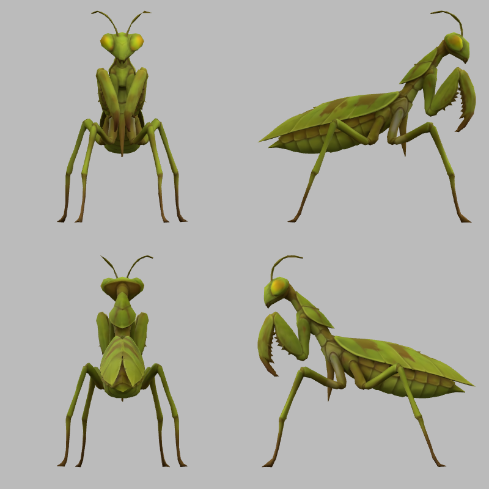

The second mob: your export of the Level I shooter, with an insect skeleton and ten moves added by hand. The head snaps from look to look, the wing covers fan out as a threat while the spit loads, the two bladed forelegs lash on the spit, and the four walking legs keep their feet pinned while they carry weight. His walk speed, the spit's warning and its three versions use the game's numbers. Pick a move, drag to turn him, and judge it. Nothing in the game has changed.
Idle or Walk sets what he does between attacks, and Going turns him on the spot. A Spit plays over it and repeats until you press it again; the game plays the three versions in turn. Hurt plays on top of anything. Death holds him down: press it again and he spawns back in. The bar names the part of the move that is playing, in the game's own words.

He came through whole: the triangular head with both eyes and antennae, the long pronotum, two spined raptorial forelegs folded in the guard, four thin walking legs with claws, and the wing covers lying over the abdomen.
| Move | What he does | Timing |
|---|---|---|
| Idle | The head never scans smoothly: it holds a look, then snaps to the next with a small overshoot, as in the game. Under it the body rocks, the abdomen breathes, the antennae sweep and twitch, and once a loop the left foreleg gives a grooming flick. | Game: a look every 0.9 s, each snap 4 ticks. 5.4 s loop. |
| Walk | The four walking legs step in diagonal pairs with high knees, each foot pinned while it carries weight. The forelegs ride in the guard and are never walked on. | Game: 1.6 u/s. 0.3 s a cycle. |
| Turn left, turn right | Short steps round on the spot, the head leading and the abdomen swinging out. | 200° a second (my number: the game turns him instantly). 0.35 s a cycle. |
| Spit (three versions) | He rears back over his hind legs, the forelegs come up and open, the wing covers fan out, the abdomen pumps three times and the eyes brighten while the warning lane fills. A short coil, then the head and thorax whip forward and down, the forelegs lash down and snap shut and the shot leaves his mouth. He is shoved back, recoils past his guard and settles with one overshoot. Left blade leads, right blade leads (the other blade lands 2 ticks later, the body leans toward the leader), or both crash together with a deeper bow and a bigger shove. | Game: warning 42 ticks (0.7 s): rear and load 31, coil 6, strike 5 ticks, the contact on the resolve tick. Held 2 frames, recoil 5 frames, settle 0.4 s. The shot flies at 4 u/s. |
| Hurt | The head and pronotum flinch back, the forelegs flare, the antennae lay back. Plays on top of any move, so planted feet stay planted. | 0.4 s |
| Spawn | Grows from the floor crouched with the blades tucked, rises, throws the forelegs open with a flash of the wing covers, and settles into the guard. | Game: grow in 7 frames, about 10% over, then stand. The rise and the blade display are mine. |
| Death | A jolt with the forelegs flying open and the head thrown back. The legs give and the body drops onto its belly with the walking legs splaying flat, it tips to one side, the forelegs fold on the floor in front, the legs twitch and go still and the wing covers slip half open. | 2.2 s, then he stays down |
| What was measured, on every frame of every move | Result |
|---|---|
| A planted foot moving on the floor (locked feet) | 0 mm in every move |
| A planted foot its leg could not reach | 6 mm at worst |
| Loops that jump when they restart (idle, walk, both turns) | 0 |
| Lowest point under the floor | 1 mm at worst outside the death. Dying, the abdomen touches the floor for a few frames as he lands; lying dead he rests on it. |
| Antennae and abdomen | Run as springs: they trail the body and settle after it stops. |
These numbers come from the model file. I checked the poses as still frames only: the cloud machine cannot play the page at full speed, so the weight, the timing and the hit are yours to judge.